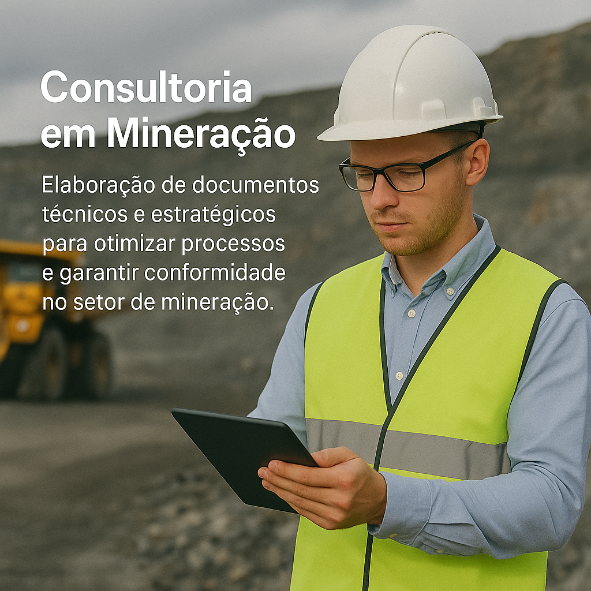

Consultoria em Mineração
Soluções documentais personalizadas para otimizar processos e garantir qualidade na gestão da mineração.
Serviços Oferecidos
- Diagnóstico Completo: Avaliação detalhada das condições atuais dos empreendimentos minerais, sejam eles instalados, em processo de licenciamento, ou iniciando operações.
- Formulação de Soluções: Desenvolvimento de estratégias e soluções personalizadas para otimizar operações, garantir conformidade regulatória e melhorar a eficiência dos projetos.
- Prospecção e Pesquisa: Requerimento de Licença de Instalação (LI), Plano de Controle Ambiental, Estudos de Viabilidade Econômica, Laudos Geológicos e Geotécnicos,Avaliação de Potencial Geológico.
- Planejamento de Canvas: Métodos de Beneficiamento, Regularização junto à SEMA e ANM, Estudo Teórico de Barragens de Rejeito.
- Avaliação e Exploração: Análise e exploração de recursos minerais para maximizar a viabilidade e o valor dos empreendimentos.